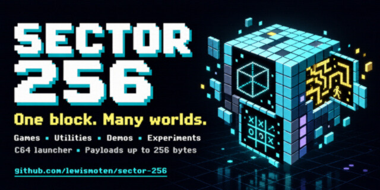

Sector 256
Tiny programs for the C64

A graphical Commodore 64 launcher for games, utilities, demos, and experiments whose stored payloads are 256 bytes or less.
Executive summary
Why it exists
One disk block holds 256 bytes. How much can a program do inside one? The limit is a disk-storage constraint, not a runtime one: launched programs run at $c000 and share a launcher API.
Outcome
A playable disk image for VICE or a real 1541, a standalone PRG and a ZIP for every program, and a static catalog page on GitHub Pages that can send a program to a C64.
My role
Author and maintainer.
Technical overview
How it works
A graphical launcher with a catalog of 288 programs, written in 6502 assembly with shared routines and a Python build pipeline. The build packages programs into a D64 disk image, and also writes a standalone PRG for each program, each with a BASIC loader and its own copy of the 795-byte API implementation. Automated machine-code tests check the programs.
Hard parts
Every catalog payload has to fit in 256 bytes, so programs lean on the shared launcher API instead of carrying their own routines.